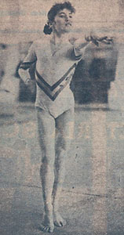

Celestina Popa (ROM)
1985 Chunichi Cup AA Champion

Medal Total
Olympic Games: 1
Silver
World Championships: 1 Gold, 1 Silver
Celestina was born on July 12, 1970. She's currently a coach at Flicka Gymnastics Club in Vancouver, Canada.
Competition Results
1985
Avignon International: 5th AA, 3rd V, 7th UB, 7th B
Balkan Championships: 1st Team, 7th AA, 1st V
Chunichi Cup: 1st AA, 1st V, 1st B, 4th FX
FRG-ROM-SUI: 1st Team, 5th AA
Golden Sands International: 6th AA, 2nd UB, 2nd B
Jr. Friendship Tournament (Druzhba): 2nd Team, 6th AA, 2nd V, 3rd UB, 3rd FX
Tokyo Cup: 1st B, 6th UB
World Championships: 2nd Team, 11th AA (prelims)
1986
Balkan Championships: 4th AA
Intl. Championships of Romania: 3rd AA, 1st FX, 2nd B
Rome Grand Prix: 2nd AA
1987
Cottbus International: 2nd AA
SUI-ROM Dual Meet: 1st Team, 3rd AA
World Championships: 1st Team, 14th AA (prelims)
1988
Olympics: 2nd Team, 10th AA (prelims)
ROM-TCH-SUI: 1st Team, 2nd AA
This page was created on December
17, 2000 and was last updated on August 25, 2007.
© Gymn Forum